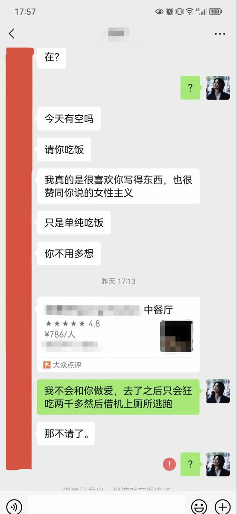

VVV从头再来
@Idontselldrug
有没有懂女性主义的，有没有懂labubu的，有没有懂抹茶拿铁的

我也不太了解她
@liaojieta1
记一次与男性的高效沟通。
（男生来自微博，之前偶尔会跟我聊几句关于性别观点类的，正经且礼貌。偶然知道同城，开始有意无意吧啦自己有腹肌长得不错之类的话，已经婉拒了两次，这是第三次约吃饭。）
总结➡️当你想拒绝一个男人，只要直球告诉他:不做爱或者会花他的钱，就能快速结束对话。 https://t.co/nZWgCsDw9l